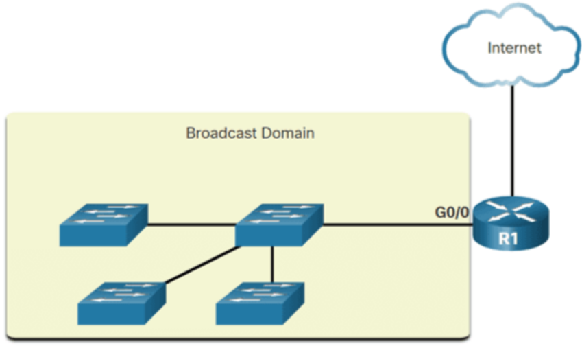
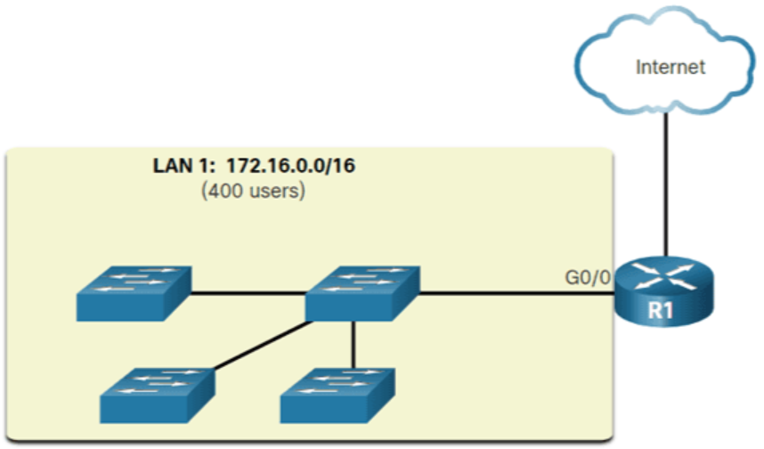
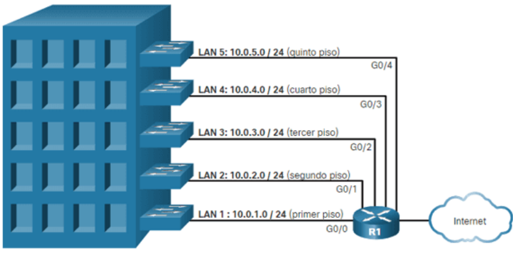
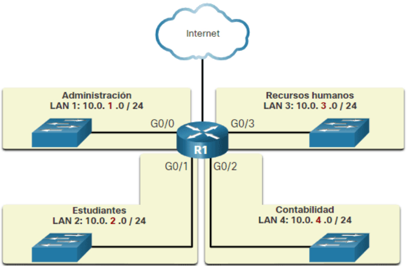
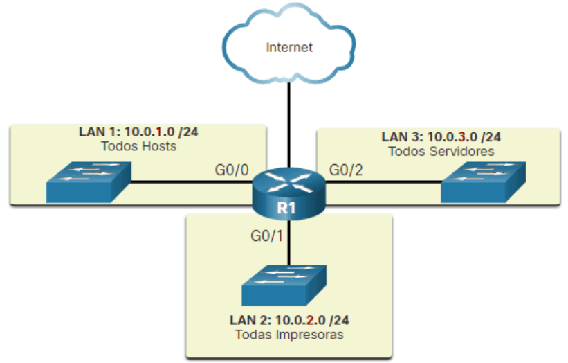
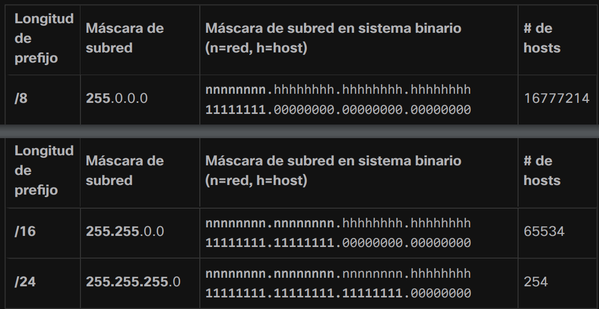
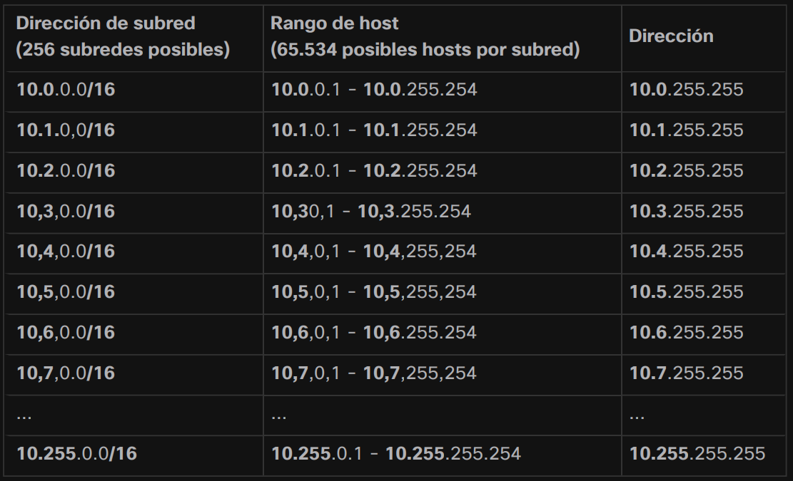
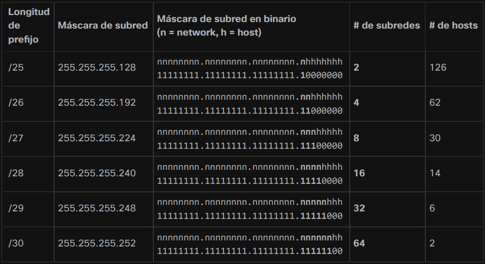

¿Qué es Subnetting?
Subnetting
El subnetting es una técnica utilizada en redes de computadoras para dividir una red IP en subredes más pequeñas. Consiste en tomar una dirección IP de red y asignar una porción de bits adicionales para crear subredes más pequeñas dentro de esa red. La subdivisión de una red en subredes permite una mejor administración de direcciones IP y un uso más eficiente de los recursos de red. Cada subred tiene su propia identificación de red única y un rango de direcciones IP asignadas.
Segmentación de la Red
Dominios de Difusión y Segmentación
En una LAN Ethernet, los dispositivos usan broadcasts y el Protocolo de resolución de direcciones (ARP) para localizar otros dispositivos. ARP envía broadcasts de capa 2 a una dirección IPv4 conocida en la red local para descubrir la dirección MAC asociada. Los dispositivos en LAN Ethernet también ubican otros dispositivos que utilizan servicios. Un host normalmente adquiere su configuración de dirección IPv4 utilizando el Protocolo de configuración dinámica de host (DHCP) que envía transmisiones en la red local para localizar un servidor DHCP.
Los Switches difunden las broadcasts de todas las interfaces, excepto la interfaz en la que se recibió. Por ejemplo, si un Switch en la imagen recibiera una broadcast, lo reenviaría a los otros Switches y a otros usuarios conectados en la red.
Un Router, R1, está conectado a un Switch a través de la interfaz G0/0. El Switch tiene conexiones a otros tres Switches. El dominio de difusión consta de los cuatro Switches y la interfaz del Router a los que están conectados. Una conexión del Router a Internet no está dentro del dominio de difusión.
Los routers no propagan broadcasts. Cuando un Router recibe una broadcast, no lo reenvía a otras interfaces. Por ejemplo, cuando R1 recibe una broadcast en su interfaz Gigabit Ethernet 0/0, no reenvía otra interfaz.
Problemas con grandes redes
Un dominio de difusión/broadcast grande es una red que conecta muchos hosts. Un problema con un dominio de broadcast grande es que estos hosts pueden generar broadcasts excesivas y afectar negativamente a la red. En la imagen, LAN 1 conecta a 400 usuarios que podrían generar una cantidad excesiva de tráfico de broadcast. Esto da como resultado operaciones de red lentas debido a la cantidad significativa de tráfico que puede causar, y operaciones lentas del dispositivo porque un dispositivo debe aceptar y procesar cada paquete de broadcast.
Razones para segmentar redes
La división en subredes reduce el tráfico general de la red y mejora el rendimiento de la red. También permite que un administrador implemente políticas de seguridad como qué subredes están permitidas o no para comunicarse entre sí. Otra razón es que reduce la cantidad de dispositivos afectados por el tráfico de transmisión anormal debido a configuraciones incorrectas, problemas de hardware/software o intenciones maliciosas.
Subredes por ubicación
Subredes por función
Subredes por dispositivos
División de Subredes
Las subredes IPv4 se crean utilizando uno o más de los bits del host como bits de red. Esto se hace extendiendo la máscara de subred para tomar prestados algunos de los bits de la parte del host de la dirección para crear bits de red adicionales. Cuantos más bits de host se prestan, más subredes se pueden definir. Cuantos más bits se prestan para aumentar la cantidad de subredes, se reduce la cantidad de hosts por subred.
Las redes se subdividen más fácilmente en el límite de octeto de /8, /16 y /24. La tabla identifica estas longitudes de prefijo. Ten en cuenta que el uso de prefijos más largos disminuye la cantidad de hosts por subred.
Máscara de subred en límites de octeto
Para comprender cómo la división en subredes en el límite del octeto puede ser útil, considera el siguiente ejemplo. Supón que una empresa ha elegido la dirección privada 10.0.0.0/8 como su dirección de red interna. Esa dirección de red puede conectar 16.777.214 hosts en un dominio de difusión. Obviamente, tener más de 16 millones de hosts en una sola subred no es lo ideal.
La empresa podría subdividir aún más la dirección 10.0.0.0/8 en el límite de octeto de /16 como se muestra en la tabla. Esto proporcionaría a la empresa la capacidad de definir hasta 256 subredes (es decir, 10.0.0.0/16 – 10.255.0.0/16) con cada subred capaz de conectar 65.534 hosts. Observa cómo los primeros dos octetos identifican la porción de red de la dirección, mientras que los dos últimos octetos son para direcciones IP de host.
Red de subredes 10.0.0.0/8 usando un prefijo /16.
Subred dentro de un límite de octeto
Los ejemplos mostrados hasta ahora tomaron prestados bits de host de los prefijos de red comunes **/8**, **/16** y **/24**. Sin embargo, las subredes pueden tomar prestados bits de cualquier posición de bit del host para crear otras máscaras.
Por ejemplo, una dirección de red /24 se divide en subredes utilizando longitudes de prefijo más largas al tomar prestados bits del cuarto octeto. Esto proporciona al administrador una flexibilidad adicional al asignar direcciones de red a un número menor de dispositivos finales.
Red de subredes a /24
Por cada bit prestado en el cuarto octeto, el número de subredes disponibles se duplica, al tiempo que se reduce el número de direcciones de host por subred:
- /25 fila - Tomar prestado 1 bit del cuarto octeto crea 2 subredes que admiten 126 hosts cada una.
- /26 fila - Tomar prestados 2 bits crea 4 subredes que admiten 62 hosts cada una.
- /27 fila - Tomar prestados 3 bits crea 8 subredes que admiten 30 hosts cada una.
- /28 fila - Tomar prestados 4 bits crea 16 subredes que admiten 14 hosts cada una.
- /29 fila - Tomar prestados 5 bits crea 32 subredes que admiten 6 hosts cada una.
- /30 fila - Tomar prestados 6 bits crea 64 subredes que admiten 2 hosts cada una.